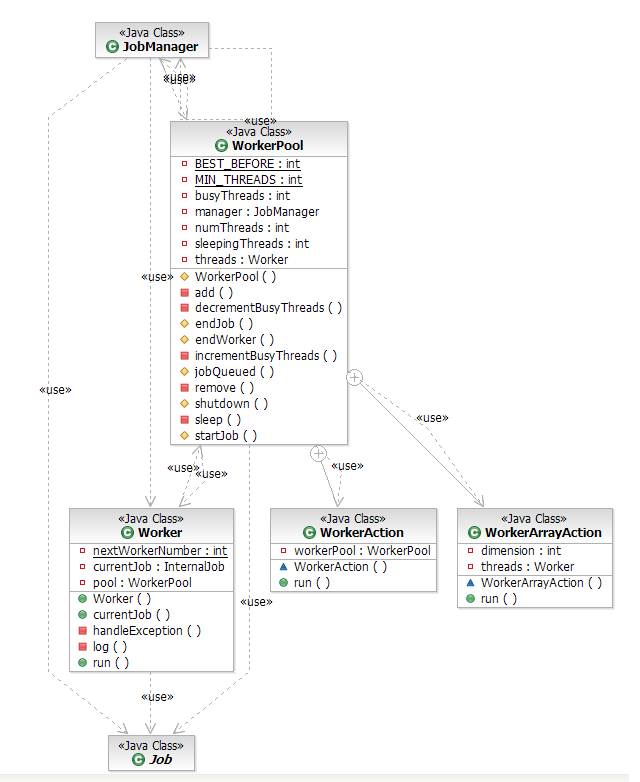

|
 |
equinox security |
|
|
WorkerPool.java changesDetailPrivileged Operation location: Class: org.eclipse.core.internal.jobs.Worker (Application) DoPrivileged location: Line# 29 void<init> ( org.eclipse.core.internal.jobs.WorkerPool ) Permission: java.lang.RuntimePermission "modifyThread" Primordial/void java.lang.Thread.<init>( java.lang.String )
Code changes:
Updated class diagram:  Supporting documentation Reference trace 1:
|